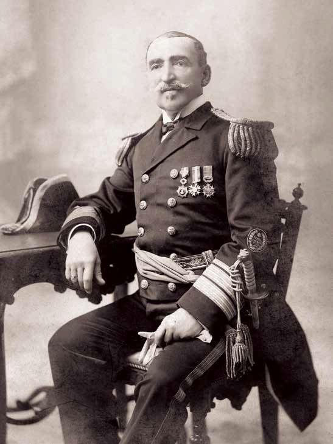
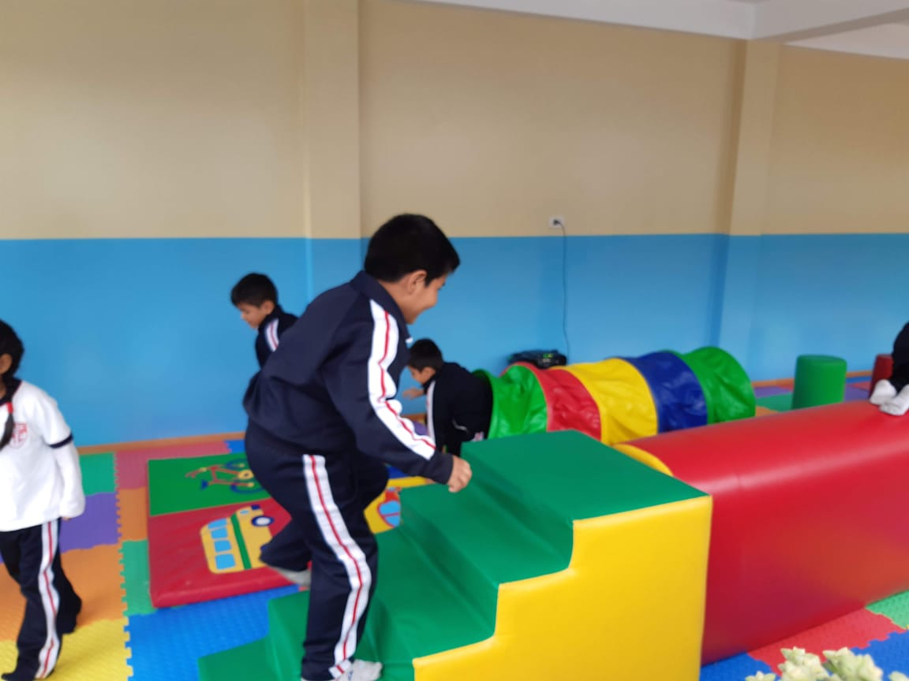
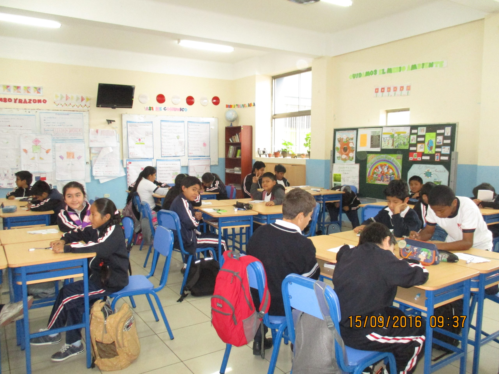
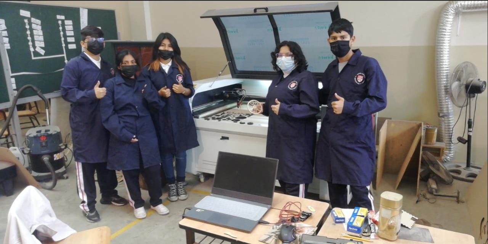
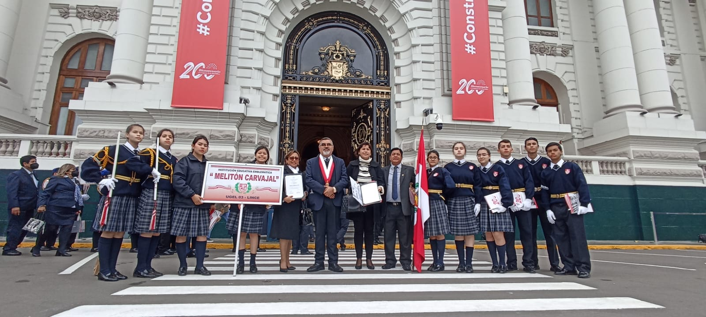
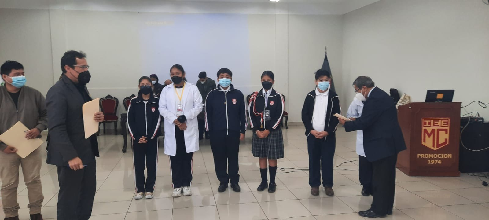
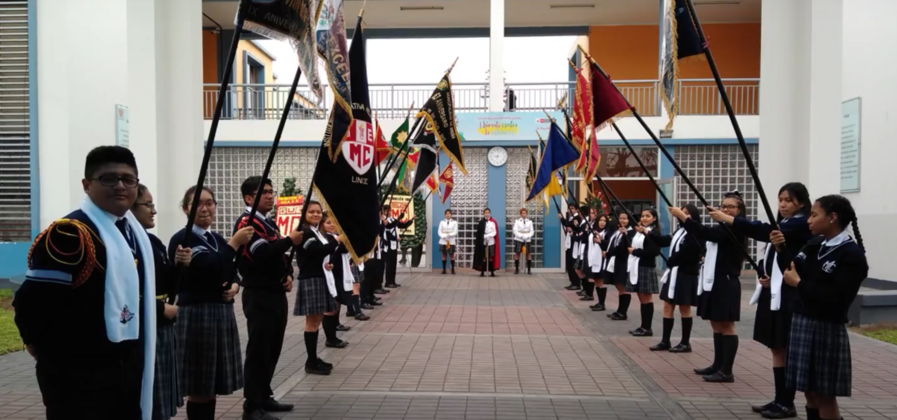

Institución Educativa Emblemática
N°1070 Melitón Carvajal
Académica
Contamos con los tres niveles de educación como: Inicial,Primaria,Secundaria.
Padres
Promovemos una relación activa con los padres para el desarrollo integral de nuestros estudiantes.
Proyectos
Impulsamos proyectos innovadores que fortalecen el aprendizaje práctico y creativo.
MELITÓN CARVAJAL
Biografía
Manuel Melitón Carvajal Ambulódegui nació en Lima, el 10 de marzo de 1847, y pasó a la historia como uno de los tripulantes del Monitor Huáscar que, comandado por el Almirante Miguel Grau Seminario, sucumbió heroicamente en el Combate de Angamos, aquel trágico 8 de octubre de 1879. Carvajal, que para entonces era el Jefe de Estado Mayor del Comando General de la Primera División Naval del Perú, fue capturado por las fuerzas chilenas, después de que una granada enemiga atravesara el blindaje de nuestro barco, causando la muerte de algunos hombres y cegando temporalmente a Melitón Carvajal, quien fue llevado, inconsciente, al cirujano más cercano a bordo. Después de pasar dos meses como prisionero de guerra, Carvajal fue intercambiado y regresó a Perú, donde fue justamente proclamado Héroe de la Guerra del Pacífico.

Estructura del Sistema Educativo

Inicial
Es un servicio de carácter integral (educación, salud, alimentación y psicología) que atiende a los niños y niñas con la finalidad de brindarles las estimulaciones requeridas y con ello la posibilidad de desarrollarse en forma equilibrada y oportuna, respetando su nivel de madurez.

Primaria
La Educación Primaria constituye el segundo nivel de la Educación Básica Regular y dura seis años. Al igual que los otros niveles, su finalidad es educar integralmente a los niños y niñas. Promueve la comunicación en todas las áreas, el manejo operacional del conocimiento, el desarrollo personal, físico, vocacional, afectivo, social, espiritual y artístico, el pensamiento lógico, la creatividad, la adquisición de habilidades necesarias para el despliegue de potencialidades del estudiante, así como también la comprensión de hechos cercanos a su ambiente natural y social.

Secundaria
Es el nivel III y constituye el VI y VII ciclo de Educación Básica Regular, comprende las modalidades de menores y la de adultos. El servicio que se brinda es escolarizado a través de colegios y en forma no escolarizada a través de programas educativos, se imparte en 5 años.
Talleres Productivos
Los estudiantes del nivel secundario reciben los talleres de gastronomía para enriquecer el conocimiento de este rubro.
Los talleres de pastelería desarrollados por los estudiantes acompañados por los docentes, el cual motiva a crear su emprendiemiento.
Mediante estos talleres creamos la conciencia de cultivar y cuidar nuestros alimentos en nuestro hogar.
Los talleres de computación son dictados por los docentes especializados dirigidos a los estudiantes con la finalidad de que los estudiantes aprendan y manejen el mundo digital.
Mediante este taller enfocados en la enseñanza a los estudiantes para fomentar la noción del negocio.



Noticias
Horario Escolar
Lunes a Viernes: 8am – 3:30pm
Dirección
Av. Leonidas Yerovi 2120 Lince, Lima – Perú